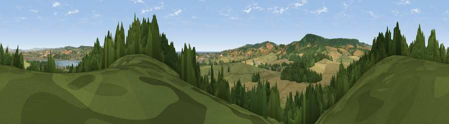

Viewpoint near Kenton
#28178 in England · top 65% of its area beats it · near KentonWhere it is
The exact computed spot (SX 95975 82325). Click the marker for map links.
The view, rendered

A 360° render of this exact spot computed from the terrain model, tree cover and land cover — summer colours, afternoon light, calibrated against photographs of famous viewpoints. Real trees, hedges and buildings will differ in detail.
The panorama
Grey silhouette: terrain skyline in each direction (720 bearings, Earth curvature and refraction included). Dashed green: skyline with trees (+15 m) and buildings (+8 m) as obstacles. Blue strip: how far the ground is visible on each bearing.
Where the view opens
Wedge length = distance to the farthest visible ground on that bearing (vegetation-aware). Rings at 10, 25 and 50 km.
What fills the view
33% woodland · 31% grassland · 28% cropland · 5% water · 2% built-up
Angular shares of the visible panorama (visual magnitude), not map area. Landscape diversity 0.58 (0–1 Shannon).
Key numbers
More beautiful places nearby
The staircase of upgrades: each row has a higher view potential than everything closer. Driving times are estimates from straight-line distance, calibrated against real road routing — check an actual route before setting out.
| Place | Direction | Drive | Score |
|---|---|---|---|
| Easter Hill | SSE · 1 km | ~4 min | 56.1 |
| Powderham Park | N · 2 km | ~5 min | 56.6 |
| Viewpoint near Kenton | WSW · 3 km | ~8 min | 80.7 |
| Viewpoint near Kenton | WSW · 4 km | ~9 min | 82.9 |
| Viewpoint near Holcombe | SSW · 8 km | ~15 min | 83.3 |
| Viewpoint near Shaldon | SSW · 12 km | ~22 min | 83.8 |
| Viewpoint near Stokeinteignhead | SSW · 13 km | ~24 min | 84.1 |
| High Peak | ENE · 15 km | ~26 min | 85.3 |
50.63131, -3.47220 · source: screening · position refined by local search. Computed location — check access rights before visiting.